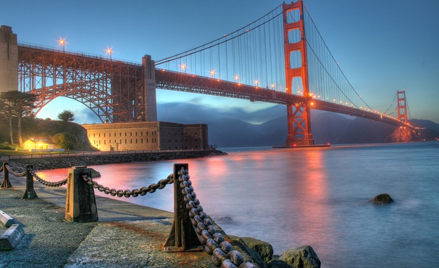
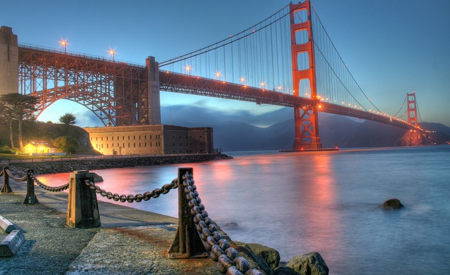
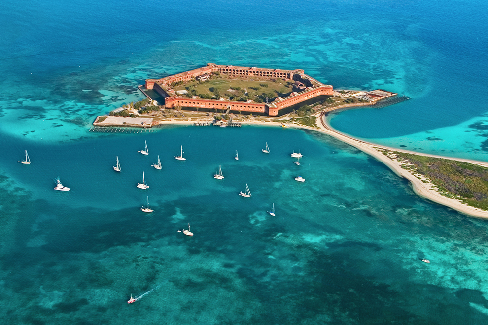
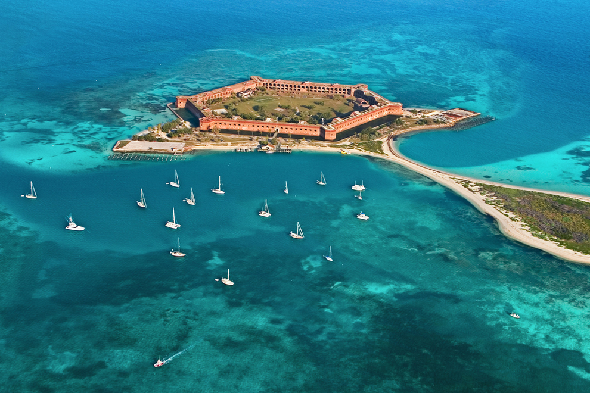

-
Beautiful Places in America
 

Capitol Lenzjona
The Indiana State capitol, located in Indianopolis.The most beautiful place in America by USA TODAY. Photo by:Getty images.
Golden Gate Bridge
This bridge is situated in San Francisco33 most beautiful places in America by Kaeli Conforti. Photo taken:August 30,2012.
 

Times Square New York
New York City & Times SquareThe Jet Life by BRINK
Dry Tortugas National Park, Florida
Surreal places to visit in AmericaThis island sits roughly 70 miles West of Key West in the Gulf of Mexico by Arielle Calderon